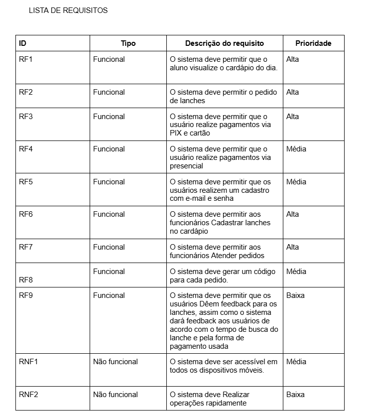
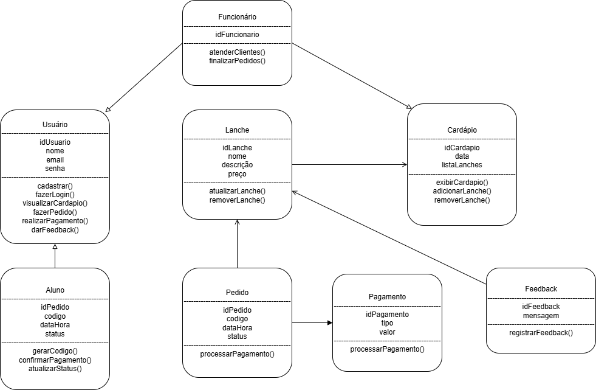
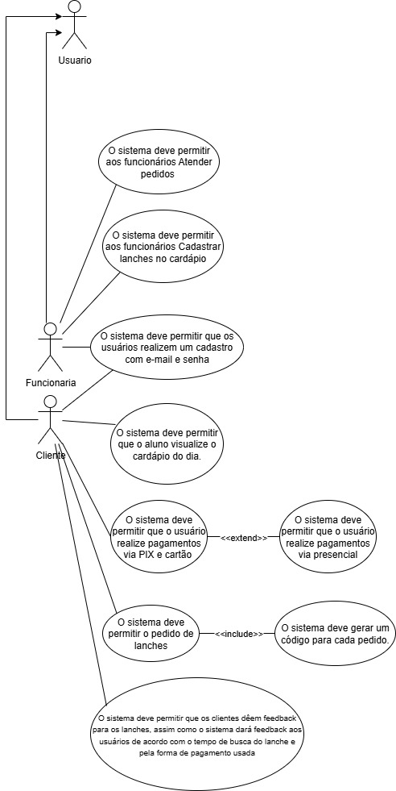
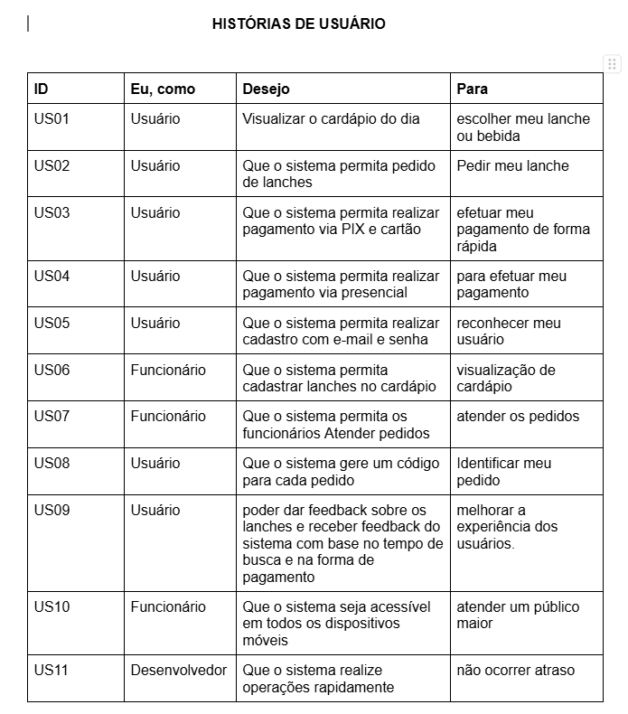
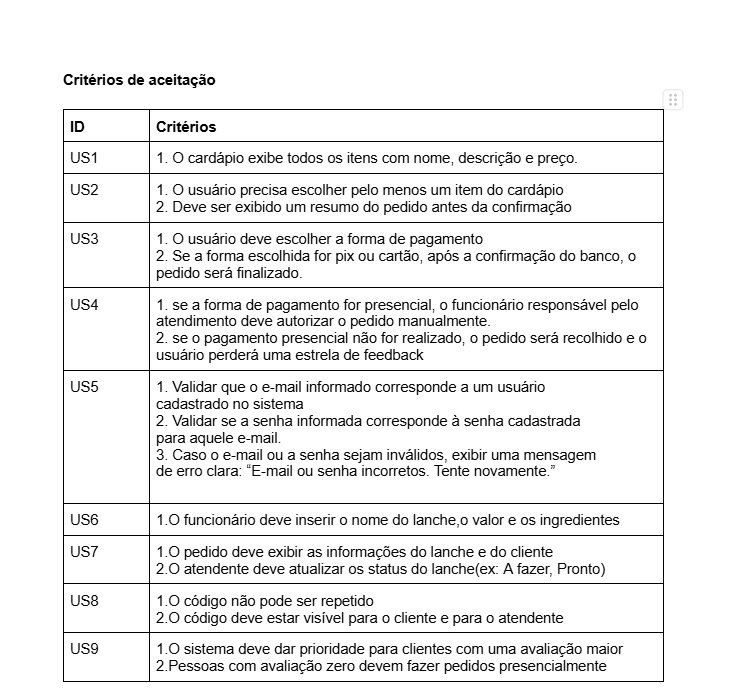

Informações do projeto
Aqui estão as informações principais do nosso projeto, desde a documentação até o protótipo.
Objetivo
O projeto Cantina + está sendo desenvolvido com o objetivo de melhorar o dia a dia na cantina do IFAL e resolver problemas como fila grande, insuficiência de atendimento e dificuldade de administração. Nosso público alvo serão estudantes de todos os cursos e funcionários em geral
Requisitos
O levantamento de requisitos deste projeto foi feito por meio de um formulário eletrônico com perguntas abertas para melhor entendimento com o cliente.
SEGUE ABAIXO LISTA DE REQUISITOS:

Diagramas
A seguir temos os diagramas de classe e casos de uso respectivamente:

Casos de uso

Critérios de aceitação e histórias de usuário
De acordo com a especificação dos requisitos, foram elaboradas as histórias de usuário e os critérios de aceitação. Segue em anexo:

Critérios de aceitação

Equipe de desenvolvimento:
Nossa equipe de desenvolvedores é composta por:
José Messias Nascimento dos Santos
Samila Maria Pereira Cabral
Arthur Barbosa dos Santos
Maria Clara dos Santos Silva
Maria Elaine Silva Santos
Estamos na fase de desenvolvimento do protótipo da aplicação e em breve iremos disponibilizar para testes para poder implementar no devido setor.